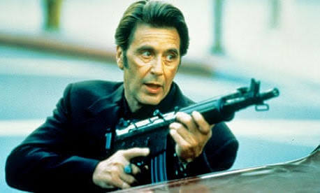

🍷 HEAT (1995) — CERTIFIED MGC XF-49

🏛 MGC LOWER COURT DOCKET
- ASSET TITLE: Heat (1995) – The Los Angeles Over-Oxidized Ballistic Ledger
- OFFICIAL REGISTRY GRADE: Certified MGC XF-49 (Extremely Fine / Elite Strike Choice)
- LOWER COURT JURISDICTION: Lower Tribunal Room / Street-Level Heist Docket
- PRESIDING PANEL: Judge Dex, Chief of R&D, Chief Grader MGC, and Chief Justice MGC
- CASE FILE: #044
📜 THE FORENSIC NARRATIVE BREAKDOWN & LUSTER LOG
- The specimen displays a fascinating, highly volatile trajectory graph under close calibration. The asset boots up in the circulated VF registers, aggressively climbs into high-end XF/AU territory, touches the Mint State (MS) room for a brief period during the elite character relationship acts, and then experiences a sharp terminal slope—roller-coasting through heavy domestic friction and predictable action terrain before being caught at the XF-49 boundary line.
The Chief of R&D drops the heavy copper-rose rim framework onto the terminal, clears the widescreen trajectory, and drops the strict 5x numismatic magnifying lens directly onto Michael Mann’s sprawling, highly volatile crime engine.
🚨 The Six Specific Ballistic & Structural Planchet Flaws:
1. The Infinite Magazine Capacity Exploit
- Under our strict lens, the iconic street battle features severe Hollywood tactical physics shortcuts, where standard rifle magazines carry unrealistic, continuous capacities with uncalibrated reload timelines.
2. The 30mm Ballistic Alteration
- The script introduces an insane ballistic blemish, magically inflating standard .223 rifle rounds to mimic the destructive mass of 30mm anti-armor ordnance that shatters automotive steel instantly.
3. Uncalibrated Law Enforcement Tactical Wear
- The tactical layout experiences noticeable friction due to unrealistic firearms handling by baseline street officers, breaking real-world law enforcement procedural reality.
4. Fake Tactical Enforcement Protocols
- The administrative response and command structure protocols operate on a stylized studio fantasy blueprint rather than grounded, authentic operational data.
5. The Exploding Second-Act Domestic Drag
- The mid-section alloy hits a massive structural bottleneck. The endless, unnecessary domestic subplots and repetitive marital friction act as a heavy circulation drag that stalls the film’s continuous linear velocity.
6. Predictable Third-Act Destination Scuffs
- The final showdown at the LAX airport hotel drops right into standard Hollywood genre scuffs. The entire gallery knew a terminal standoff was locked and De Niro’s character would be eliminated long before the shutter closed, leaving deep handling scratches on a coin that should have been pristine.
⚖️ The Final Judicial Decree
- With six heavy ballistic and pacing blemishes formally logged and sustained on the record, the hyper-glow is officially dead. The corporate grading agencies can hyper-glow this asset all they want, but the unvarnished hard truth is sealed. The immaculate ambient cafe audio tracking and the pristine strike depth of the diner confrontation are the only elements protecting this coin from falling into the lower junk box chambers.
- Permanently sealed in the archives as a Certified MGC XF-49 Choice Specimen. Case Closed. 🍷🏙️🔫🔊

• © 2026 MOVIE GRADING CONSENSUS. All Sovereign Rights Reserved.